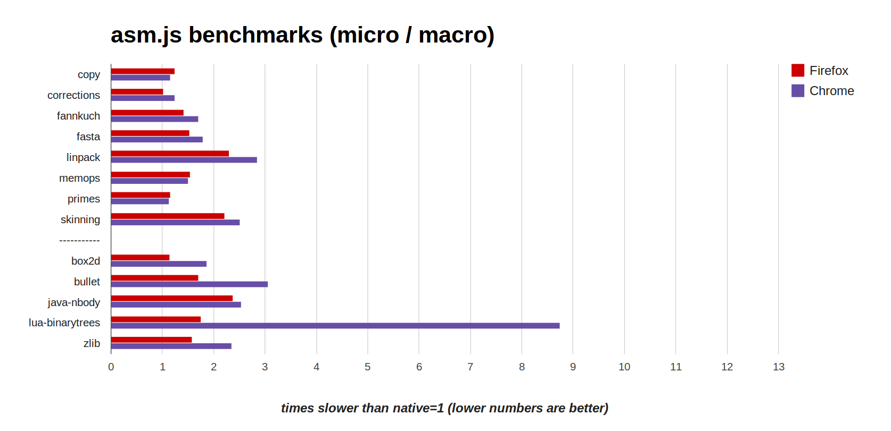

Emscripten: Compiling
LLVM bitcode to JavaScript (?!)
Alon Zakai (Mozilla)
(these slides just tweeted at @kripken)
JavaScript..? At the LLVM developer's conference..?
Everything compiles into LLVM bitcode
Everything compiles into LLVM bitcode
The web is everywhere, and runs JavaScript
Compiling LLVM bitcode to JavaScript lets us run everything, everywhere
This works today!
Game engines like Unreal Engine 3
Programming languages like Lua
Libraries too: Bullet
Of course, usually native builds are best
But imagine, for example, that you wrote a new feature in clang and want to let people give it a quick test
Build once to JS, and just give people a URL
(and that's not theoretical)
Ok, how does this work?
LLVM vs. JavaScript
Random (unrelated) code samples from each:
%r = load i32* %p
%s = shl i32 %r, 16
%t = call i32 @calc(i32 %r, i32 %s)
br label %next
var x = new MyClass('name', 5).chain(function(arg) {
if (check(arg)) doMore({ x: arg, y: [1,2,3] });
else throw 'stop';
});
What could be more different? ;)
Numeric Types
| LLVM | ||
Performance Model
| LLVM | ||
Control Flow
| LLVM | ||
Variables
| LLVM | ||

Ironic, actually - many wish JS had block scope, like most languages...
Ok, how do we get
around these issues?
// LLVM IR
define i32 @func(i32* %p) {
%r = load i32* %p
%s = shl i32 %r, 16
%t = call i32 @calc(i32 %r, i32 %s)
ret i32 %t
}
⇒ Emscripten ⇒
// JS
function func(p) {
var r = HEAP[p];
return calc(r, r << 16);
}
Almost direct mapping in many cases
Another example:
float array[5000]; // C++
int main() {
for (int i = 0; i < 5000; ++i) {
array[i] += 1.0f;
}
}⇒ Emscripten ⇒
var g = Float32Array(5000); // JS
function main() {
var a = 0, b = 0;
do {
a = b << 2;
g[a >> 2] = +g[a >> 2] + 1.0;
b = b + 1 | 0;
} while ((b | 0) < 5000);
}(this "style" of code is a subset of JS called asm.js)
JS as a compilation target
JS began as a slow interpreted language
Gained type-specializing JITs
Those are very good at statically typed code
LLVM compiled through Emscripten is exactly that, so it can be fast
Speed: More Detail
(x+1)|0 ⇒ 32-bit integer + in modern JS VMs
Loads in LLVM IR become reads from typed array in JS, which become reads in machine code
Emscripten's memory model is identical to LLVM's (flat C-like, aliasing, etc.), so can use all LLVM opts
Benchmarks
{kind=link}
(VMs and Emscripten from Oct 28th 2013, run on 64-bit linux)
Open source (MIT/LLVM)
Began in 2010
Most of the codebase is not the core compiler, but libraries + toolchain + test suite
Emscripten Compiler | Emscripten Optimizer |
Compiler and optimizer written mostly in JS
Wait, that's not an LLVM backend..?
3 JS compilers, 3 architectures
Mandreel: Typical LLVM backend, uses tblgen, selection DAG (like x86, ARM backends)
Duetto: Processes LLVM IR in llvm::Module (like C++ backend)
Emscripten: Processes LLVM IR in assembly
Emscripten's choice
JS is such an odd target ⇒ wanted architecture with maximal flexibility in codegen
Helped prototype & test many approaches
Downsides too

Emscripten currently must do its own legalization (are we doing it wrong? probably...)
Optimizing JS
Emscripten has 3 optimizations we found are crucial for JS, up to 10x slowdowns without each
Whatever the best architecture is, it should be able to implement those - let's go over them now
1. Reloop
block0:
; code0
br i1 %cond, label %block0, label %block1
block1:
; code1
br %label block0
Without relooping (emulated gotos):
var label = 0;
while (1) switch (label) {
case 0:
// code0
label = cond ? 0 : 1; break;
case 1:
// code1
label = 0; break;
}
3. Reloop
block0:
; code0
br i1 %cond, label %block0, label %block1
block1:
; code1
br %label block0
With relooping:
while (1) {
do {
// code0
} while (cond);
// code1
}
3. Reloop
Relooping allows JS VM to optimize better, as it can understand control flow
Emscripten Relooper code is generic, written in C++, and used by other projects (e.g., Duetto)
This one seems like it could work in any architecture, in an LLVM backend or not
2. Expressionize
var a = g(x);
var b = a + y;
var c = HEAP[b];
var d = HEAP[20];
var e = x + y + z;
var f = h(d, e);
FUNCTION_TABLE[c](f);
⇒
FUNCTION_TABLE[HEAP[g(x) + y](h(HEAP[20], x + y + z));
2. Expressionize
Improves JIT time and execution speed: fewer variables ⇒ less stuff for JS engines to worry about
Reduces code size
3. Registerize
var a = g(x) | 0; // integers
var b = a + y | 0;
var c = HEAP[b] | 0;
var d = +HEAP[20]; // double
⇒
var a = g(x) | 0;
a = a + y | 0;
a = HEAP[a] | 0;
var d = +HEAP[20];
3. Registerize
Looks like regalloc, but goal is different: Minimize # of total variables (in each type), not spills
JS VMs will do regalloc, only they know the actual # of registers
Benefits code size & speed like expressionize
Opts Summary
Expressionize & registerize require precise modelling of JS semantics (and order of operations is in some cases surprising!)
Is there a nice way to these opts in an LLVM backend, or do we need a JS AST?
Questions: Should Emscripten change how it interfaces with LLVM? What would LLVM like upstreamed?
Conclusion
LLVM bitcode can be compiled to JavaScript and run in all browers, at high speed, in a standards-compliant way
For more info, see emscripten.org - feedback & contributions always welcome
Thank you for listening!